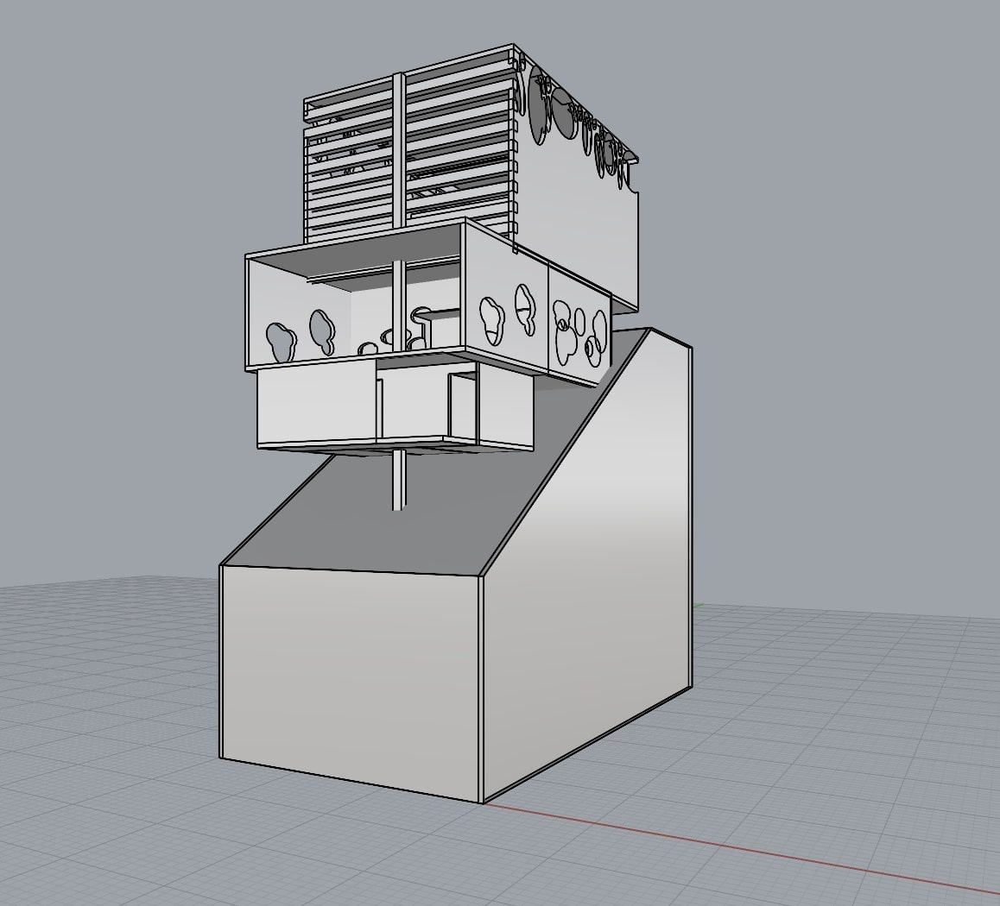

Iterative 3D modeling, spatial analysis, and constraint-based design

The Rafedesan Rhino model served as the primary digital tool for translating conceptual requirements into a structured three-dimensional system. Built at 3/16" = 1'-0" scale, the model was used to evaluate spatial relationships, circulation paths, structural organization, and design constraints through iterative development.
The Rhino model was constructed with an emphasis on clarity, accuracy, and hierarchy. Major architectural elements—floors, walls, roofs, and circulation—were modeled as distinct layers to allow for rapid iteration and analysis. Wall thicknesses, floor depths, and structural proportions were modeled to reflect realistic construction logic.
The sloped site was modeled to scale so that changes in elevation could be evaluated digitally. Ramps, stairs, and circulation routes were iterated within the model to resolve movement across the site while responding to accessibility and spatial constraints.
This project strengthened my ability to organize complex information into a structured digital model, isolate system components, test alternatives through iteration, and evaluate how individual design decisions affect the larger system.